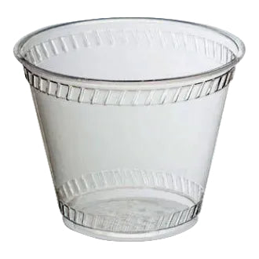
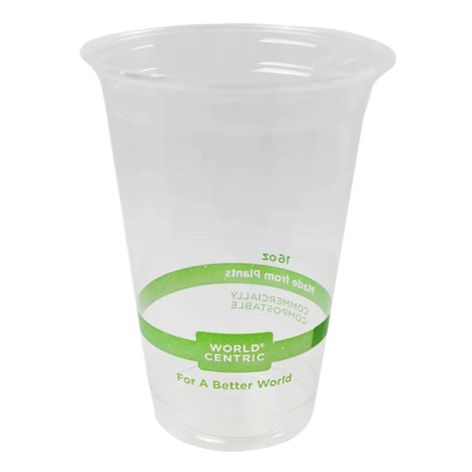
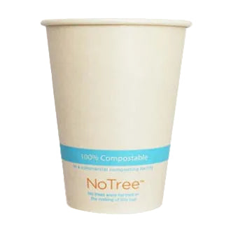

9 oz Cold Cup | Corn Plastic | Made in USA
Clear 9 oz PLA cold cup; the listing identifies US manufacture.
View official product ↗CAFÉ & EVENT ESSENTIALS
Explore three cold-cup formats and model the quantities for a service period before checking the official catalog.

Three real references. Confirm options, prices and availability at the official store.
Clear 9 oz PLA cold cup; the listing identifies US manufacture.
View official product ↗
World Centric 16 oz clear PLA cup for cold beverages.
View official product ↗
12 oz NoTree cold cup in brown bamboo paper with a bio-based lining.
View official product ↗YOUR LOCAL SHORTLIST
Your selection stays in this browser. It does not reserve products or submit orders.
The official store organizes cups by hot and cold use.
Lids have a separate category; compatibility must be checked against the chosen cup.
The site provides samples and composting information; disposal depends on facilities and product certification.